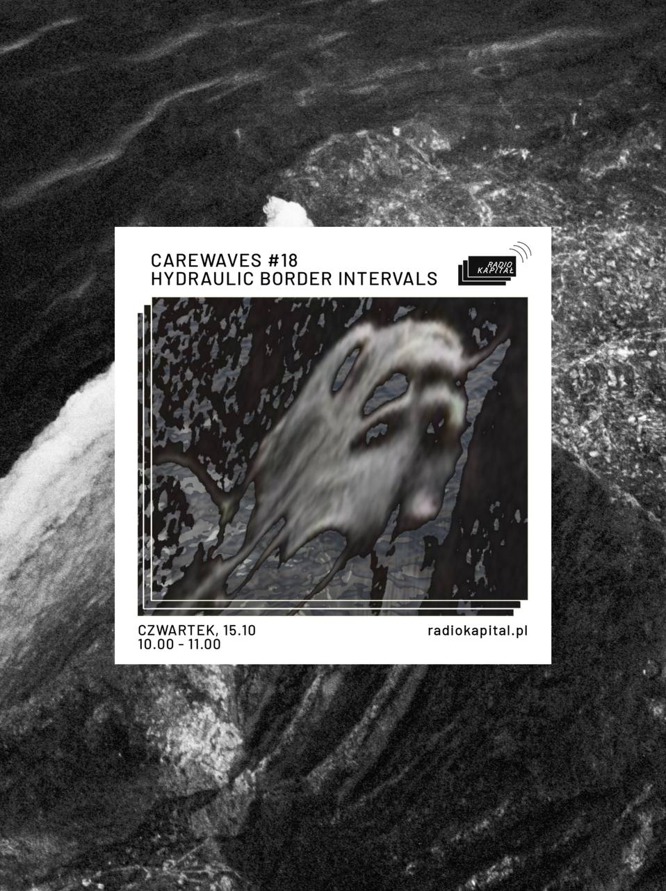

Extending an ongoing research project and an eponymous exhibition at Tieranatomisches Theater (TA T), developed within the inherit program, Hydraulic Border Intervals explores borders as environmental and infrastructural conditions shaped by military violence and shifting ecologies. Through exchanged field recordings, participants navigate a multidimensional journey across shorelines and states of matter. From ice on Khortytsia Island and shells along the Dnipro to gulls in Kavala, the Evros Delta, and Berlin’s waterways, sounds carry the afterlives of encounters across distances and into new contexts. The sonic compositions follow the principle of an anti-library, archiving encounters between bodies and their environments through sound. Guided by the participants’ voices, listening and speaking become ways of empathising with and bodily experiencing these scenes, bringing distant landscapes and temporalities into relation without necessarily arriving at a destination.
Hydraulic Border Intervals – translocal listening session
Carewaves #18, Radio Kapitał, Warsaw, 2026
